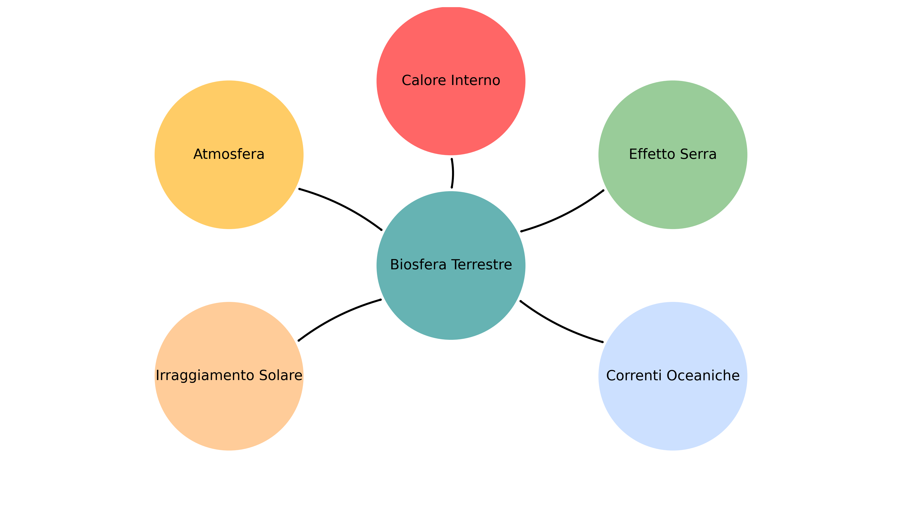

Le Basi
Cos'è il cambiamento climatico?
I cambiamenti climatici o mutamenti climatici sono le variazioni del clima sulla Terra.
Ultimamente ci viene raccontato spesso che noi siamo la causa dei cambiamenti climatici. Non è sbagliato. Ma non è nemmeno giusto.
I mutamenti climatici sono propri nel nostro pianeta da sempre. Pensa alle Ere Glaciali. La terra è in costante ricerca dell'equilibrio climatico.
Il mantenimento dell'equilibrio nella biosfera terrestre è dovuto all'azione di questi cinque fattori:
- Calore interno del pianeta
- Irraggiamento solare che ci fornisce l'energia per l'effetto serra e gestisce i cambiamenti dell'attività solare.
- Effetto delle correnti oceaniche ed evaporazione marina
- Presenza dell'atmosfera che limita gli sbalzi di temperatura
- Effetto serra naturale che amplifica l'effetto dell'irraggiamento.
Quindi, non sono questi fattori a causare dei cambiamenti climatici ma è la variazione di questi fattori che distrugge l'equilibrio terrestre.

Qual è il nostro ruolo quindi?
Beh, noi viviamo qui, e come parte della terra i nostri atteggiamenti vanno a influire sul suo equilibrio. Il nostro attuale stile di vita fa estremo uso dei cosiddetti combustibili fossili, immettendo nell'atmosfera grandi quantità di CO₂ e metano che aumentano l'azione dell'effetto serra generando quello che conosciamo come "surriscaldamento globale". La deforestazione e gli allevamenti intensivi poi, peggiorano ancora di più la situazione.
L'IPCC, composto da scienziati, ha affermato che a partire dalla metà del XX secolo le azioni dell'uomo sono state riconosciute come cause del cambiamento climatico sotto forma di alterazione dell'effetto serra.
World Weather Attribution: ente che si occupa di scienza dell'attribuzione (cioè dimostrano i rapporti di causa-effetto tra l'aumento delle temperature e un fenomeno specifico) ha riconosciuto il 4 Settembre 2024 che la siccità estrema riscontrata nello stesso anno in Sicilia e Sardegna non sarebbe stata definibile "estrema" senza il cambiamento climatico dato dall'uomo. Le azioni dell'uomo hanno aumentato del 50% la probabilità che accadesse.
Perché è così importante preoccuparcene?
Perché ai livelli attuali il nostro pianeta è gravemente disequilibrato tanto da aver definito questa situazione: "crisi climatica".
Da queste premesse possiamo passare al concetto di impatto ambientale:
Cos'è l'impatto ambientale?
L’impatto ambientale è tutto ciò che le nostre azioni causano alla natura: i rifiuti che finiscono nei mari, la distruzione degli habitat naturali, l'inquinamento dell'aria e molto altro.
Ogni scelta conta: quello che mangi, come ti sposti, cosa compri.
Scopri qual è il tuo impatto ambientale: Fai il test!
Per questo esistono strumenti come la Valutazione di Impatto Ambientale (VIA), atto amministrativo previsto dalla legge che serve a valutare gli impatti ambientali di un'opera.
In Italia è normata C.Lgs. 152/2006
💡 Cosa puoi fare tu? Qui troverai alcuni semplici consigli per avere atteggiamenti consapevoli.